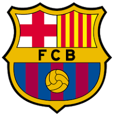
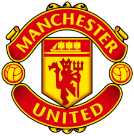

FC Barcelona
Az FC Barcelona egy spanyol labdarúgóklub, amely Katalóniában, Barcelonában működik. A klubot 1899-ben
alapították, és azóta is az egyik legnagyobb hagyományokkal rendelkező egyesület a világon. A Barcelona
híres támadójátékáról és saját nevelésű fiatal tehetségeiről.

Manchester United
A Manchester United egy angol profi labdarúgócsapat, amely Manchester városában található. A klub az egyik
legsikeresebb az angol futball történetében, számos bajnoki címmel és európai trófeával büszkélkedhet.
Híres a dinamikus játékstílusáról és legendás játékosairól.